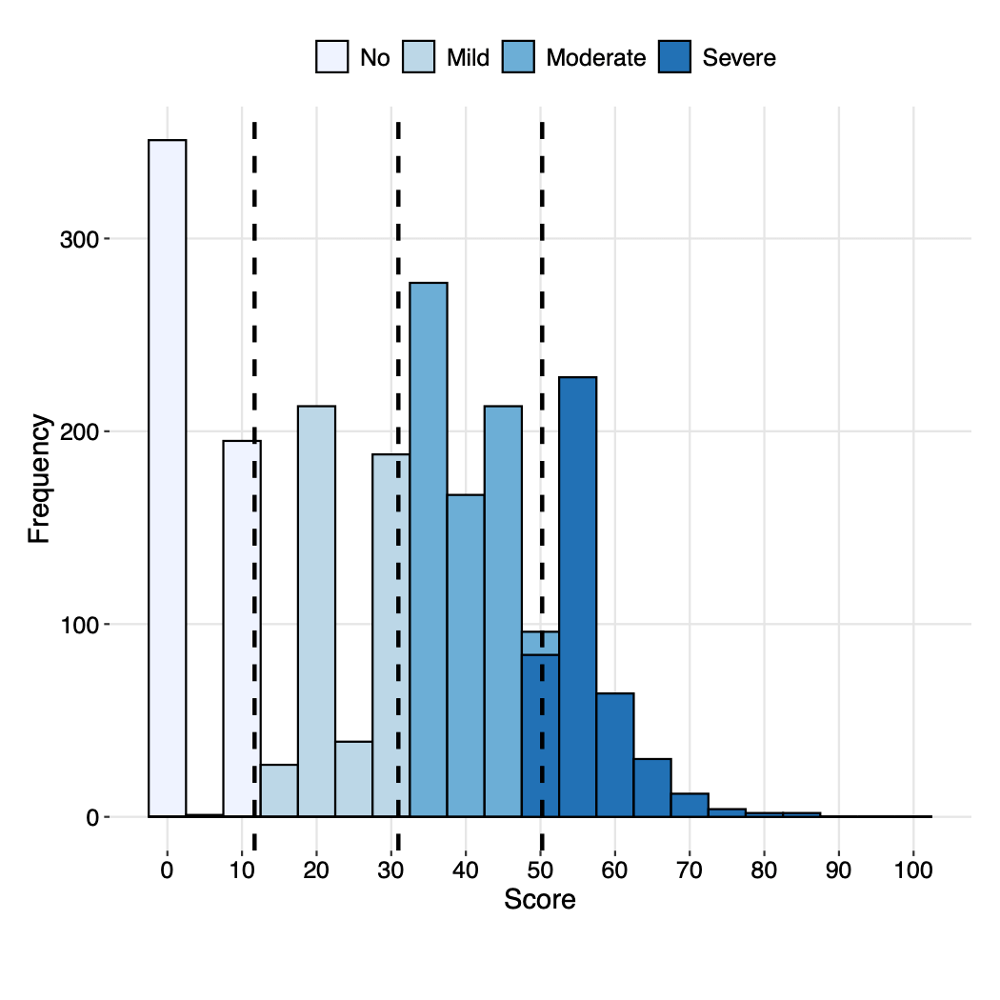

6 - Después de Análisis Rasch: Análisis descriptivo
Source:vignettes/c6_after_rasch_ES.Rmd
c6_after_rasch_ES.RmdUnir puntajes con datos originales
Una vez que haya terminado con Rasch Analysis, la puntuación se genera en el archivo Data_final.csv en la columna llamada rescaled. Este archivo solo contendrá los individuos incluidos en el análisis. Cualquier persona que tenga demasiados valores perdidos (NA) no estará en este archivo. A menudo es recomendable combinar los datos originales con todos los individuos con las nuevas puntuaciones. Cualquier persona que no haya calculado una puntuación tendrá un NA en esta columna.
Esta unión se puede lograr con el siguiente código. Primero, abre el paquete llamada tidyverse para acceder a las funciones necesarias. A continuación, lee el archivo Data_final.csv y selecciona solo las columnas que necesitas: ID (o cualquiera que sea el nombre de la columna de identificación individual en sus datos) y rescaled. El siguiente código asume que el archivo está en su directorio operativo. Tendrás que incluir la ruta completa al archivo si no está actualmente en su directorio operativo. Finalmente, puedes crear un objeto merged_data que fusione sus datos originales, aquí representados con el objeto original_data, con la nueva puntuación en una columna renombrada a "DisabilityScore" con el siguiente código:
library(tidyverse)
new_score <- read_csv("Data_final.csv") %>%
select(c("ID", "rescaled"))
merged_data <- original_data %>%
left_join(new_score) %>%
rename("DisabilityScore" = "rescaled")Los datos de ejemplo incluidos en el paquete whomds llamado df_adults ya tienen una puntuación de Rasch combinada, en la columna disability_score.
Después de Rasch: análisis descriptivo
Después de calcular los puntajes de discapacidad con el Análisis Rasch, ahora estás listo para analizar los resultados de la encuesta mediante el cálculo de estadísticas descriptivas. El paquete whomds contiene funciones para crear tablas y figuras de estadísticas descriptivas. Esta sección repasará estas funciones.
Tablas
Las funciones de estadísticas descriptivas incluidas en el paquete whomds son:
-
table_weightedpct()- produce tablas ponderadas de N o % -
table_unweightedpctn()- produce tablas no ponderadas de N y % -
table_basicstats()- calcula estadísticas básicas del número de miembros por grupo por hogar.
Los argumentos de cada uno de estos códigos se describirán a continuación.
table_weightedpct()
whomds contiene una función llamada table_weightedpct () que calcula las tablas de resultados ponderados de la encuesta, desagregadas por variables especificadas. Los argumentos de esta función se pasan a funciones en el paquete dplyr.
A continuación se presentan los argumentos de la función:
-
df- el marco de datos con todas las variables de interés -
vars_ids- nombres de variables de los identificadores de cluster de encuesta -
vars_strata- nombres de variables de los estratos de la encuesta -
vars_weights- nombres de variables de los ponderaciones -
formula_vars- vector de los nombres de columna de las variables para las que desea imprimir los resultados -
...- captura expresiones para filtrar o transmutar los datos. Vee la descripción del argumentowillfiltera continuación para más detalles. -
formula_vars_levels- vector numérico de los niveles de factor de las variables enformula_vars. Por defecto, la función asume que las variables tienen dos niveles: 0 y 1 -
by_vars- las variables por las que desagregas -
pct- una variable lógica que indica si se deben calcular o no los porcentajes ponderados. El valor predeterminado esTRUEpara porcentajes ponderados. Ajuste aFALSEpara N ponderada -
willfilter- una variable que le dice a la función si filtrarás o no los datos por un valor particular.- Por ejemplo, si sus
formula_varstienen opciones de respuesta de 0 y 1 pero solo quieres mostrar los valores para 1, entonces diría quewillfilter = TRUE. Luego, al final de la lista de argumentos, escribe una expresión para el filtro. En este caso, diríasresp == 1. - Si es
willfilter = FALSE, entonces la función asumirá que desea “transmutar” los datos, en otras palabras, manipular las columnas de alguna manera, lo que para nosotros a menudo significa combinar las opciones de respuesta. Por ejemplo, si susformula_varstienen 5 opciones de respuesta, pero solo desea mostrar los resultados para la suma de las opciones"Agree"y"StronglyAgree", (después de configurarspread_key = "resp"para extender el tabla por las opciones de respuesta) podrías escribirwillfilter = FALSE, y luego directamente después de escribir la expresión para la transmutación, dándole un nuevo nombre de columna; en este caso, la expresión seríaNewColName = Agree + AgreeStrongly. También escribe los nombres de las otras columnas que te gustaría mantener en la tabla final. - Si deja
willfiltercomo su valor predeterminado deNULL, la función no filtrará ni transmutará los datos.
- Por ejemplo, si sus
-
add_totals: una variable lógica que determina si se crean filas o columnas totales (según corresponda) que demuestren el margen que suma a 100. Manténlo como el valor predeterminadoFALSEpara no incluir los totales. -
spread_key- la variable para la que extiendas la tabla horizontalmente. Mantén como predeterminadoNULLpara no extender la tabla horizontalmente. -
spread_value- la variable con la que se llena la tabla después de una extensión horizontal. Por defecto, este argumento es"prop", que es un valor creado internamente por la función y generalmente no necesita ser cambiado. -
arrange_vars- la lista de variables para la que organizas la tabla. Mantén como predeterminadoNULLpara dejar el arreglo como está. -
include_SE- una variable lógica que indica si se deben incluir los errores estándar en la tabla. Mantén como predeterminadoFALSEpara no incluir errores estándar. A partir de esta versión dewhomds, no funciona si incluyes totales (add_totalsesTRUE), extensión (spread_keyno esNULL) o transmutación (willfilteresFALSE).
Aquí hay algunos ejemplos de cómo se usaría table_weightedpct() en la práctica. No todos los argumentos se establecen explícitamente en cada ejemplo, lo que significa que se mantienen como sus valores predeterminados.
Ejemplo 1: tabla larga, un nivel de desagregación
Digamos que queremos imprimir una tabla del porcentaje de personas en cada nivel de discapacidad que dieron cada opción de respuesta para un conjunto de preguntas sobre el entorno general. Escribiríamos los argumentos de table_weightedpct() de esta manera, y las primeras filas de la tabla se verían así:
#Quitar NAs de la columna utilizada para el argumento by_vars
df_adults_noNA <- df_adults %>%
filter(!is.na(disability_cat))
table_weightedpct(
df = df_adults_noNA,
vars_ids = "PSU",
vars_strata = "strata",
vars_weights = "weight",
formula_vars = paste0("EF", 1:12),
formula_vars_levels = 1:5,
by_vars = "disability_cat",
spread_key = NULL,
spread_value = "prop",
arrange_vars = NULL,
willfilter = NULL
)
#> # A tibble: 236 × 4
#> # Groups: disability_cat, item [48]
#> disability_cat item resp prop
#> <ord> <ord> <fct> <dbl>
#> 1 No EF1 1 42.1
#> 2 No EF1 2 15.8
#> 3 No EF1 3 15.2
#> 4 No EF1 4 12.4
#> 5 No EF1 5 14.6
#> 6 No EF10 1 44.2
#> 7 No EF10 2 10.5
#> 8 No EF10 3 22.8
#> 9 No EF10 4 11.6
#> 10 No EF10 5 10.9
#> # … with 226 more rowsLa tabla de resultados tiene 4 columnas: la variable por la que desagregamos los datos (disability_cat, es decir, el nivel de discapacidad), el elemento (item), la opción de respuesta (resp) y la proporción (prop).
Ejemplo 2: tabla ancha, un nivel de desagregación
Esta larga tabla del ejemplo anterior es excelente para el análisis de datos, pero no excelente para leer a simple vista. Si queremos hacerlo más bonito, lo convertimos a “formato ancho” mediante “extensión” mediante una variable particular. Tal vez queremos extender por disability_cat. Nuestra ejecución de table_weightedpct() ahora se vería así, y la tabla de salida sería:
table_weightedpct(
df = df_adults_noNA,
vars_ids = "PSU",
vars_strata = "strata",
vars_weights = "weight",
formula_vars = paste0("EF", 1:12),
formula_vars_levels = 1:5,
by_vars = "disability_cat",
spread_key = "disability_cat",
spread_value = "prop",
arrange_vars = NULL,
willfilter = NULL
)
#> # A tibble: 60 × 6
#> # Groups: item [12]
#> item resp No Mild Moderate Severe
#> <ord> <fct> <dbl> <dbl> <dbl> <dbl>
#> 1 EF1 1 42.1 47.5 43.4 46.6
#> 2 EF1 2 15.8 15.3 17.2 11.9
#> 3 EF1 3 15.2 14.2 14.3 15.0
#> 4 EF1 4 12.4 9.62 11.2 10.4
#> 5 EF1 5 14.6 13.3 13.8 16.1
#> 6 EF10 1 44.2 49.9 49.3 49.7
#> 7 EF10 2 10.5 12.6 10.3 9.84
#> 8 EF10 3 22.8 16.0 18.4 17.2
#> 9 EF10 4 11.6 11.9 14.6 13.3
#> 10 EF10 5 10.9 9.64 7.40 9.87
#> # … with 50 more rowsAhora podemos ver que nuestra columna prop se ha extendido horizontalmente para cada nivel dedisability_cat.
Ejemplo 3: tabla amplia, un nivel de desagregación, filtrado
Quizás, sin embargo, solo nos interesan las proporciones de la opción de respuesta más extrema de 5. Ahora podríamos agregar un filtro a nuestra ejecución a table_weightedpct() así:
table_weightedpct(
df = df_adults_noNA,
vars_ids = "PSU",
vars_strata = "strata",
vars_weights = "weight",
formula_vars = paste0("EF", 1:12),
formula_vars_levels = 1:5,
by_vars = "disability_cat",
spread_key = "disability_cat",
spread_value = "prop",
arrange_vars = NULL,
willfilter = TRUE,
resp == 5
)
#> # A tibble: 12 × 6
#> # Groups: item [12]
#> item resp No Mild Moderate Severe
#> <ord> <fct> <dbl> <dbl> <dbl> <dbl>
#> 1 EF1 5 14.6 13.3 13.8 16.1
#> 2 EF10 5 10.9 9.64 7.40 9.87
#> 3 EF11 5 1.75 0.974 2.27 1.75
#> 4 EF12 5 4.38 NA NA NA
#> 5 EF2 5 5.55 5.29 5.13 6.25
#> 6 EF3 5 4.85 5.40 3.69 5.16
#> 7 EF4 5 2.73 2.47 3.40 3.35
#> 8 EF5 5 10.4 13.4 8.80 11.2
#> 9 EF6 5 4.08 3.08 1.96 2.56
#> 10 EF7 5 4.29 3.28 2.72 4.68
#> 11 EF8 5 2.28 1.29 1.19 2.41
#> 12 EF9 5 5.20 3.59 4.89 5.26Ahora puede ver que solo se dan las proporciones para la opción de respuesta de 5.
Ejemplo 4: tabla ancha, múltiples niveles de desagregación, filtrada
Con table_weightedpct(), también podemos agregar más niveles de desagregación editando el argumento by_vars. Aquí produciremos la misma tabla que en el Ejemplo 3 anterior, pero ahora desagregada por nivel de discapacidad y sexo:
table_weightedpct(
df = df_adults_noNA,
vars_ids = "PSU",
vars_strata = "strata",
vars_weights = "weight",
formula_vars = paste0("EF", 1:12),
formula_vars_levels = 1:5,
by_vars = c("disability_cat", "sex"),
spread_key = "disability_cat",
spread_value = "prop",
arrange_vars = NULL,
willfilter = TRUE,
resp == 5
)
#> # A tibble: 24 × 7
#> # Groups: sex, item [24]
#> sex item resp No Mild Moderate Severe
#> <fct> <ord> <fct> <dbl> <dbl> <dbl> <dbl>
#> 1 Female EF1 5 13.2 14.7 13.1 15.4
#> 2 Female EF10 5 11.1 9.91 6.41 9.62
#> 3 Female EF11 5 1.15 1.24 2.26 2.57
#> 4 Female EF12 5 3.60 NA NA NA
#> 5 Female EF2 5 7.44 6.21 6.18 6.94
#> 6 Female EF3 5 4.60 6.32 4.02 4.62
#> 7 Female EF4 5 3.19 3.20 3.00 2.34
#> 8 Female EF5 5 8.61 13.1 9.77 10.3
#> 9 Female EF6 5 3.25 3.76 2.29 2.89
#> 10 Female EF7 5 4.44 4.12 2.76 2.34
#> # … with 14 more rowsEjemplo 5: tabla ancha, niveles múltiples de desagregación, transmutada
Quizás todavía estamos interesados no solo en la opción de respuesta 5, sino en la suma de 4 y 5 juntos. Podemos hacer esto “transmutando” nuestra tabla. Para hacer esto, primero elegimos “extender” por resp configurando spread_key = "resp". Esto convertirá la tabla a un formato ancho como en el Ejemplo 2, pero ahora cada columna representará una opción de respuesta. Luego configuramos la transmutación estableciendo willfilter = FALSE, y agregando expresiones para la transmutación en la siguiente línea. Nombramos todas las columnas que nos gustaría mantener y damos una expresión de cómo crear la nueva columna de la suma de proporciones para las opciones de respuesta 4 y 5, aquí llamada “problemas”:
table_weightedpct(
df = df_adults_noNA,
vars_ids = "PSU",
vars_strata = "strata",
vars_weights = "weight",
formula_vars = paste0("EF", 1:12),
formula_vars_levels = 1:5,
by_vars = c("disability_cat", "sex"),
spread_key = "resp",
spread_value = "prop",
arrange_vars = NULL,
willfilter = FALSE,
disability_cat, sex, item, problems = `4`+`5`
)
#> # A tibble: 96 × 4
#> # Groups: disability_cat, sex, item [96]
#> disability_cat sex item problems
#> <ord> <fct> <ord> <dbl>
#> 1 No Female EF1 27.2
#> 2 No Female EF10 21.6
#> 3 No Female EF11 6.44
#> 4 No Female EF12 6.69
#> 5 No Female EF2 11.6
#> 6 No Female EF3 8.53
#> 7 No Female EF4 5.96
#> 8 No Female EF5 18.5
#> 9 No Female EF6 8.12
#> 10 No Female EF7 11.1
#> # … with 86 more rowsSi nos gustaría modificar la tabla nuevamente para que disability_cat represente las columnas nuevamente, podemos incluir esta tabla en otra función que realizará el “pivot”. La función para extender tablas se llama pivot_wider(), y está en el paquete tidyr. Para realizar una segunda extensión, escribe el código así:
table_weightedpct(
df = df_adults_noNA,
vars_ids = "PSU",
vars_strata = "strata",
vars_weights = "weight",
formula_vars = paste0("EF", 1:12),
formula_vars_levels = 1:5,
by_vars = c("disability_cat", "sex"),
spread_key = "resp",
spread_value = "prop",
arrange_vars = NULL,
willfilter = FALSE,
disability_cat, sex, item, problems = `4`+`5`
) %>%
pivot_wider(names_from = disability_cat, values_from = problems)
#> # A tibble: 24 × 6
#> # Groups: sex, item [24]
#> sex item No Mild Moderate Severe
#> <fct> <ord> <dbl> <dbl> <dbl> <dbl>
#> 1 Female EF1 27.2 25.0 22.2 25.2
#> 2 Female EF10 21.6 19.7 22.6 20.6
#> 3 Female EF11 6.44 5.19 5.98 8.61
#> 4 Female EF12 6.69 NA NA NA
#> 5 Female EF2 11.6 11.2 11.4 13.8
#> 6 Female EF3 8.53 11.6 7.00 9.36
#> 7 Female EF4 5.96 4.69 6.35 4.37
#> 8 Female EF5 18.5 24.3 17.8 21.8
#> 9 Female EF6 8.12 8.72 5.06 5.33
#> 10 Female EF7 11.1 7.58 9.06 8.69
#> # … with 14 more rowsEl argumento names_from de la función pivot_wider() le dice a R qué variable usar como columnas, y values_from le dice aR con qué llenar las columnas. El operador %>% se conoce comúnmente como una “pipe”. Pone el objeto anterior en el primer argumento de la función posterior. Por ejemplo, si tiene un objeto x y una función f, escribir x %>% f () sería el equivalente a escribir f(x). Las personas usan “pipes” porque hacen que las secuencias largas de código sean más fáciles de leer.
table_unweightedpctn()
whomds contiene una función llamada table_unweightedpctn() que produce tablas no ponderadas de N y %. Esto se utiliza generalmente para tablas demográficas. Sus argumentos son los siguientes:
-
df- el marco de datos con todas las variables de interés -
vars_demo- vector con los nombres de las variables demográficas para las que se calcularán N y % -
group_by_var: nombre de la variable en la que se deben estratificar las estadísticas (por ejemplo,"disability_cat") -
spread_by_group_by_var- determina lógicamente si se debe extender la tabla mediante la variable dada engroup_by_var. El valor predeterminado esFALSE. -
group_by_var_sums_to_100- determina lógicamente si los porcentajes suman 100 en el margen degroup_by_var, si corresponde. El valor predeterminado esFALSE. -
add_totals: una variable lógica que determina si se crean filas o columnas totales (según corresponda) que demuestren el margen que suma 100. Manténlo como el valor predeterminadoFALSEpara no incluir los totales.
Aquí hay un ejemplo de cómo se usa:
table_unweightedpctn(df_adults_noNA,
vars_demo = c("sex", "age_cat", "work_cat", "edu_cat"),
group_by_var = "disability_cat",
spread_by_group_by_var = TRUE)
#> # A tibble: 12 × 10
#> item demo No_pct No_n Mild_pct Mild_n Moderate_pct Moderate_n Severe_pct
#> <chr> <ord> <dbl> <dbl> <dbl> <dbl> <dbl> <dbl> <dbl>
#> 1 sex Fema… 52.5 287 53.5 250 49.9 376 49.1
#> 2 sex Male 47.5 260 46.5 217 50.1 377 50.9
#> 3 age_cat 18-24 6.9 38 7.3 34 8.8 66 7.7
#> 4 age_cat 25-39 19.7 108 16.1 75 19.7 148 16.4
#> 5 age_cat 40-64 32.4 177 33.2 155 29.3 221 32.6
#> 6 age_cat 64-1… 41 224 43.5 203 42.2 318 43.2
#> 7 work_c… N 41.7 228 40.5 189 42 316 42.3
#> 8 work_c… Y 58.3 319 59.5 278 58 437 57.7
#> 9 edu_cat None 21.8 119 16.7 78 21.4 161 19
#> 10 edu_cat Elem… 37.8 207 38.8 181 39.7 299 41.3
#> 11 edu_cat Seco… 25 137 28.7 134 23.2 175 25.1
#> 12 edu_cat Univ… 15.4 84 15.8 74 15.7 118 14.6
#> # … with 1 more variable: Severe_n <dbl>
table_basicstats()
La función table_basicstats() calcula estadísticas básicas del número de miembros por grupo por hogar. Sus argumentos son:
-
df- un marco de datos de datos de hogares donde las filas representan miembros de los hogares en la muestra -
hh_id- cadena (longitud 1) que indica el nombre de la variable endfque identifica hogares únicamente -
group_by_var- cadena (longitud 1) con el nombre de la variable endfpara la que se agrupa los resultados
Aquí hay un ejemplo de cómo se usa:
table_basicstats(df_adults_noNA, "HHID", "age_cat")
#> # A tibble: 5 × 4
#> age_cat mean_sd median range
#> <chr> <chr> <dbl> <chr>
#> 1 18-24 0.1 (0.3) 0 0 - 1
#> 2 25-39 0.2 (0.4) 0 0 - 1
#> 3 40-64 0.3 (0.5) 0 0 - 1
#> 4 64-100 0.4 (0.5) 0 0 - 1
#> 5 Total 1 (0) 1 1 - 1Figuras
Las funciones de las estadísticas descriptivas incluidas en el paquete whomds son:
-
fig_poppyramid()- produce una figura de pirámide de población para la muestra -
fig_dist()- produce un gráfico de la distribución de una puntuación -
fig_density()- produce un gráfico de la densidad de una puntación
Los argumentos de cada uno de estos códigos se describirán a continuación.
fig_poppyramid()
whomds contiene una función llamada fig_poppyramid() que produce una figura de pirámide de población para la muestra. Esta función toma como argumentos:
-
df- los datos donde cada fila es un miembro del hogar de la lista del hogar -
var_age- el nombre de la columna endfcon las edades de las personas -
var_sex- el nombre de la columna endfcon los sexos de las personas -
x_axis- una cadena que indica si se deben usar números absolutos o porcentaje de muestra en el eje horizontal. Las opciones son"n"(predeterminado) o"pct". -
age_plus- un valor numérico que indica la edad que es el primer valor del grupo de edad más antiguo. El valor predeterminado es 100, para el último grupo de edad de 100 o más. -
age_by- un valor numérico que indica el ancho de cada grupo de edad, en años. El valor predeterminado es 5.
Ejecutar esta función produce una figura como la siguiente:

fig_dist()
whomds contiene una función llamada fig_dist() que produce un gráfico de la distribución de una puntuación. La OMS utiliza esta función para mostrar la distribución de las puntuaciones de discapacidad calculadas con el Análisis de Rasch. Sus argumentos son:
-
df- marco de datos con la puntuación de interés -
score- variable de carácter del nombre de variable de puntuación que va de 0 a 100; ej."disability_score" -
score_cat- variable de carácter del nombre de variable de categorización de puntuación, ej."disability_cat" -
cutoffs- un vector numérico de los puntos de corte para la categorización de puntuación -
x_lab- una cadena que da la etiqueta del eje horizontal. El valor predeterminado es"Score" -
y_max- valor máximo para usar en el eje vertical. Si se deja como predeterminadoNULL, la función calculará un máximo adecuado automaticamente. -
pcent- variable lógica que indica si se debe usar el porcentaje en el eje y o la frecuencia. Deje por defectoFALSEpara la frecuencia y déTRUEpara el porcentaje. -
pal- una cadena que especifica el tipo de paleta de colores a usar, que se pasa a la funciónRColorBrewer::brewer.pal(). El valor predeterminado es"Blues". -
binwidth- un valor numérico que da el ancho de los contenedores en el histógrafo. El valor predeterminado es 5.
Ejecutar esta función produce una figura como la de abajo.

fig_density()
whomds contiene una función similar a fig_dist() llamada fig_density() que produce un gráfico de la densidad de una puntuación. La OMS utiliza esta función para mostrar la distribución de densidad de las puntuaciones de discapacidad calculadas con el Análisis de Rasch. Sus argumentos son:
-
df- marco de datos con la puntuación de interés -
score- variable de carácter del nombre de variable de puntuación que va de 0 a 100; ej."disability_score" -
var_color- variable de carácter con el nombre de la columna que se usa para determinar los colores de las líneas de densidad. Se usa este variable para imprimir las densidades de diferentes groups en el mismo gráfico. El valor predeterminado esNULL. -
var_facet- variable de carácter con el nombre de la columna que se usa para crear un gráfico conggplot2::facet_grid(), que se imprime las densidades de diferentes groups lado a lado. El valor predeterminado esNULL. -
cutoffs- un vector numérico de los puntos de corte para la categorización de puntuación -
x_lab- una cadena que da la etiqueta del eje horizontal. El valor predeterminado es"Score" -
pal- una cadena que especifica un color manual para utilizar para el aestitico del color, un vector de carácter que especifica los colores que se usa para la escala de colores, o como el tipo de paleta de colores a usar para la escala de colores, que se pasa a la funciónRColorBrewer::brewer.pal(). El valor predeterminado es"Paired" -
adjust- un valor numérico que se pasa al argumentoadjustdeggplot2::geom_density(), que suaviza la función de la densidad. El valor predeterminado es 2. -
size- un valor numérico que se pasa al argumentosizedeggplot2::geom_density(), que controla el espesor de las líneas. El valor predeterminado es 1.5.
Ejecutar esta función produce una figura como la de abajo.

Plantillas para estadísticas descriptivas
La OMS también proporciona una plantilla para calcular muchas tablas de estadísticas descriptivas para su uso en informes de encuestas, también escritas en R. Si desea una plantilla para su país, contáctenos (por favor abre el archivo DESCRIPTION para obtender los detalles de contacto).